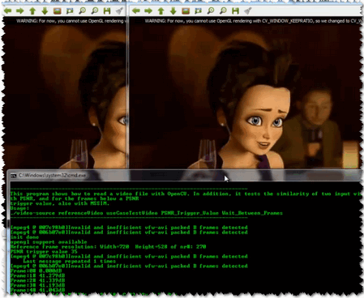

Video Input with OpenCV and similarity measurement¶
Goal¶
Today it is common to have a digital video recording system at your disposal. Therefore, you will eventually come to the situation that you no longer process a batch of images, but video streams. These may be of two kinds: real-time image feed (in the case of a webcam) or prerecorded and hard disk drive stored files. Luckily OpenCV threats these two in the same manner, with the same C++ class. So here’s what you’ll learn in this tutorial:
- How to open and read video streams
- Two ways for checking image similarity: PSNR and SSIM
The source code¶
As a test case where to show off these using OpenCV I’ve created a small program that reads in two video files and performs a similarity check between them. This is something you could use to check just how well a new video compressing algorithms works. Let there be a reference (original) video like this small Megamind clip and a compressed version of it. You may also find the source code and these video file in the samples/cpp/tutorial_code/HighGUI/video-input-psnr-ssim/ folder of the OpenCV source library.
1 2 3 4 5 6 7 8 9 10 11 12 13 14 15 16 17 18 19 20 21 22 23 24 25 26 27 28 29 30 31 32 33 34 35 36 37 38 39 40 41 42 43 44 45 46 47 48 49 50 51 52 53 54 55 56 57 58 59 60 61 62 63 64 65 66 67 68 69 70 71 72 73 74 75 76 77 78 79 80 81 82 83 84 85 86 87 88 89 90 91 92 93 94 95 96 97 98 99 100 101 102 103 104 105 106 107 108 109 110 111 112 113 114 115 116 117 118 119 120 121 122 123 124 125 126 127 128 129 130 131 132 133 134 135 136 137 138 139 140 141 142 143 144 145 146 147 148 149 150 151 152 153 154 155 156 157 158 159 160 161 162 163 164 165 166 167 168 169 170 171 172 173 174 175 176 177 178 179 180 181 182 183 184 185 186 187 188 189 190 191 | #include <iostream> // for standard I/O
#include <string> // for strings
#include <iomanip> // for controlling float print precision
#include <sstream> // string to number conversion
#include <opencv2/core/core.hpp> // Basic OpenCV structures (cv::Mat, Scalar)
#include <opencv2/imgproc/imgproc.hpp> // Gaussian Blur
#include <opencv2/highgui/highgui.hpp> // OpenCV window I/O
using namespace std;
using namespace cv;
double getPSNR ( const Mat& I1, const Mat& I2);
Scalar getMSSIM( const Mat& I1, const Mat& I2);
int main(int argc, char *argv[])
help();
if (argc != 5)
{
cout << "Not enough parameters" << endl;
return -1;
}
stringstream conv;
const string sourceReference = argv[1], sourceCompareWith = argv[2];
int psnrTriggerValue, delay;
conv << argv[3] << endl << argv[4]; // put in the strings
conv >> psnrTriggerValue >> delay; // take out the numbers
char c;
int frameNum = -1; // Frame counter
VideoCapture captRefrnc(sourceReference), captUndTst(sourceCompareWith);
if (!captRefrnc.isOpened())
{
cout << "Could not open reference " << sourceReference << endl;
return -1;
}
if (!captUndTst.isOpened())
{
cout << "Could not open case test " << sourceCompareWith << endl;
return -1;
}
Size refS = Size((int) captRefrnc.get(CV_CAP_PROP_FRAME_WIDTH),
(int) captRefrnc.get(CV_CAP_PROP_FRAME_HEIGHT)),
uTSi = Size((int) captUndTst.get(CV_CAP_PROP_FRAME_WIDTH),
(int) captUndTst.get(CV_CAP_PROP_FRAME_HEIGHT));
if (refS != uTSi)
{
cout << "Inputs have different size!!! Closing." << endl;
return -1;
}
const char* WIN_UT = "Under Test";
const char* WIN_RF = "Reference";
// Windows
namedWindow(WIN_RF, CV_WINDOW_AUTOSIZE);
namedWindow(WIN_UT, CV_WINDOW_AUTOSIZE);
cvMoveWindow(WIN_RF, 400 , 0); //750, 2 (bernat =0)
cvMoveWindow(WIN_UT, refS.width, 0); //1500, 2
cout << "Reference frame resolution: Width=" << refS.width << " Height=" << refS.height
<< " of nr#: " << captRefrnc.get(CV_CAP_PROP_FRAME_COUNT) << endl;
cout << "PSNR trigger value " << setiosflags(ios::fixed) << setprecision(3)
<< psnrTriggerValue << endl;
Mat frameReference, frameUnderTest;
double psnrV;
Scalar mssimV;
for(;;) //Show the image captured in the window and repeat
{
captRefrnc >> frameReference;
captUndTst >> frameUnderTest;
if (frameReference.empty() || frameUnderTest.empty())
{
cout << " < < < Game over! > > > ";
break;
}
++frameNum;
cout << "Frame: " << frameNum << "# ";
///////////////////////////////// PSNR ////////////////////////////////////////////////////
psnrV = getPSNR(frameReference,frameUnderTest);
cout << setiosflags(ios::fixed) << setprecision(3) << psnrV << "dB";
//////////////////////////////////// MSSIM /////////////////////////////////////////////////
if (psnrV < psnrTriggerValue && psnrV)
{
mssimV = getMSSIM(frameReference, frameUnderTest);
cout << " MSSIM: "
<< " R " << setiosflags(ios::fixed) << setprecision(2) << mssimV.val[2] * 100 << "%"
<< " G " << setiosflags(ios::fixed) << setprecision(2) << mssimV.val[1] * 100 << "%"
<< " B " << setiosflags(ios::fixed) << setprecision(2) << mssimV.val[0] * 100 << "%";
}
cout << endl;
////////////////////////////////// Show Image /////////////////////////////////////////////
imshow(WIN_RF, frameReference);
imshow(WIN_UT, frameUnderTest);
c = (char)cvWaitKey(delay);
if (c == 27) break;
}
return 0;
}
double getPSNR(const Mat& I1, const Mat& I2)
{
Mat s1;
absdiff(I1, I2, s1); // |I1 - I2|
s1.convertTo(s1, CV_32F); // cannot make a square on 8 bits
s1 = s1.mul(s1); // |I1 - I2|^2
Scalar s = sum(s1); // sum elements per channel
double sse = s.val[0] + s.val[1] + s.val[2]; // sum channels
if( sse <= 1e-10) // for small values return zero
return 0;
else
{
double mse = sse / (double)(I1.channels() * I1.total());
double psnr = 10.0 * log10((255 * 255) / mse);
return psnr;
}
}
Scalar getMSSIM( const Mat& i1, const Mat& i2)
{
const double C1 = 6.5025, C2 = 58.5225;
/***************************** INITS **********************************/
int d = CV_32F;
Mat I1, I2;
i1.convertTo(I1, d); // cannot calculate on one byte large values
i2.convertTo(I2, d);
Mat I2_2 = I2.mul(I2); // I2^2
Mat I1_2 = I1.mul(I1); // I1^2
Mat I1_I2 = I1.mul(I2); // I1 * I2
/*************************** END INITS **********************************/
Mat mu1, mu2; // PRELIMINARY COMPUTING
GaussianBlur(I1, mu1, Size(11, 11), 1.5);
GaussianBlur(I2, mu2, Size(11, 11), 1.5);
Mat mu1_2 = mu1.mul(mu1);
Mat mu2_2 = mu2.mul(mu2);
Mat mu1_mu2 = mu1.mul(mu2);
Mat sigma1_2, sigma2_2, sigma12;
GaussianBlur(I1_2, sigma1_2, Size(11, 11), 1.5);
sigma1_2 -= mu1_2;
GaussianBlur(I2_2, sigma2_2, Size(11, 11), 1.5);
sigma2_2 -= mu2_2;
GaussianBlur(I1_I2, sigma12, Size(11, 11), 1.5);
sigma12 -= mu1_mu2;
///////////////////////////////// FORMULA ////////////////////////////////
Mat t1, t2, t3;
t1 = 2 * mu1_mu2 + C1;
t2 = 2 * sigma12 + C2;
t3 = t1.mul(t2); // t3 = ((2*mu1_mu2 + C1).*(2*sigma12 + C2))
t1 = mu1_2 + mu2_2 + C1;
t2 = sigma1_2 + sigma2_2 + C2;
t1 = t1.mul(t2); // t1 =((mu1_2 + mu2_2 + C1).*(sigma1_2 + sigma2_2 + C2))
Mat ssim_map;
divide(t3, t1, ssim_map); // ssim_map = t3./t1;
Scalar mssim = mean(ssim_map); // mssim = average of ssim map
|
How to read a video stream (online-camera or offline-file)?¶
Essentially, all the functionalities required for video manipulation is integrated in the VideoCapture C++ class. This on itself builds on the FFmpeg open source library. This is a basic dependency of OpenCV so you shouldn’t need to worry about this. A video is composed of a succession of images, we refer to these in the literature as frames. In case of a video file there is a frame rate specifying just how long is between two frames. While for the video cameras usually there is a limit of just how many frames they can digitalize per second, this property is less important as at any time the camera sees the current snapshot of the world.
The first task you need to do is to assign to a VideoCapture class its source. You can do this either via the constructor or its open function. If this argument is an integer then you will bind the class to a camera, a device. The number passed here is the ID of the device, assigned by the operating system. If you have a single camera attached to your system its ID will probably be zero and further ones increasing from there. If the parameter passed to these is a string it will refer to a video file, and the string points to the location and name of the file. For example, to the upper source code a valid command line is:
video/Megamind.avi video/Megamind_bug.avi 35 10
We do a similarity check. This requires a reference and a test case video file. The first two arguments refer to this. Here we use a relative address. This means that the application will look into its current working directory and open the video folder and try to find inside this the Megamind.avi and the Megamind_bug.avi.
const string sourceReference = argv[1],sourceCompareWith = argv[2];
VideoCapture captRefrnc(sourceReference);
// or
VideoCapture captUndTst;
captUndTst.open(sourceCompareWith);
To check if the binding of the class to a video source was successful or not use the isOpened function:
if ( !captRefrnc.isOpened())
{
cout << "Could not open reference " << sourceReference << endl;
return -1;
}
Closing the video is automatic when the objects destructor is called. However, if you want to close it before this you need to call its release function. The frames of the video are just simple images. Therefore, we just need to extract them from the VideoCapture object and put them inside a Mat one. The video streams are sequential. You may get the frames one after another by the read or the overloaded >> operator:
Mat frameReference, frameUnderTest;
captRefrnc >> frameReference;
captUndTst.open(frameUnderTest);
The upper read operations will leave empty the Mat objects if no frame could be acquired (either cause the video stream was closed or you got to the end of the video file). We can check this with a simple if:
if( frameReference.empty() || frameUnderTest.empty())
{
// exit the program
}
A read method is made of a frame grab and a decoding applied on that. You may call explicitly these two by using the grab and then the retrieve functions.
Videos have many-many information attached to them besides the content of the frames. These are usually numbers, however in some case it may be short character sequences (4 bytes or less). Due to this to acquire these information there is a general function named get that returns double values containing these properties. Use bitwise operations to decode the characters from a double type and conversions where valid values are only integers. Its single argument is the ID of the queried property. For example, here we get the size of the frames in the reference and test case video file; plus the number of frames inside the reference.
Size refS = Size((int) captRefrnc.get(CV_CAP_PROP_FRAME_WIDTH),
(int) captRefrnc.get(CV_CAP_PROP_FRAME_HEIGHT)),
cout << "Reference frame resolution: Width=" << refS.width << " Height=" << refS.height
<< " of nr#: " << captRefrnc.get(CV_CAP_PROP_FRAME_COUNT) << endl;
When you are working with videos you may often want to control these values yourself. To do this there is a set function. Its first argument remains the name of the property you want to change and there is a second of double type containing the value to be set. It will return true if it succeeds and false otherwise. Good examples for this is seeking in a video file to a given time or frame:
captRefrnc.set(CV_CAP_PROP_POS_MSEC, 1.2); // go to the 1.2 second in the video
captRefrnc.set(CV_CAP_PROP_POS_FRAMES, 10); // go to the 10th frame of the video
// now a read operation would read the frame at the set position
For properties you can read and change look into the documentation of the get and set functions.
Image similarity - PSNR and SSIM¶
We want to check just how imperceptible our video converting operation went, therefore we need a system to check frame by frame the similarity or differences. The most common algorithm used for this is the PSNR (aka Peak signal-to-noise ratio). The simplest definition of this starts out from the mean squad error. Let there be two images: I1 and I2; with a two dimensional size i and j, composed of c number of channels.
Then the PSNR is expressed as:
Here the is the maximum valid value for a pixel. In case of the simple single byte image per pixel per channel this is 255. When two images are the same the MSE will give zero, resulting in an invalid divide by zero operation in the PSNR formula. In this case the PSNR is undefined and as we’ll need to handle this case separately. The transition to a logarithmic scale is made because the pixel values have a very wide dynamic range. All this translated to OpenCV and a C++ function looks like:
double getPSNR(const Mat& I1, const Mat& I2)
{
Mat s1;
absdiff(I1, I2, s1); // |I1 - I2|
s1.convertTo(s1, CV_32F); // cannot make a square on 8 bits
s1 = s1.mul(s1); // |I1 - I2|^2
Scalar s = sum(s1); // sum elements per channel
double sse = s.val[0] + s.val[1] + s.val[2]; // sum channels
if( sse <= 1e-10) // for small values return zero
return 0;
else
{
double mse =sse /(double)(I1.channels() * I1.total());
double psnr = 10.0*log10((255*255)/mse);
return psnr;
}
}
Typically result values are anywhere between 30 and 50 for video compression, where higher is better. If the images significantly differ you’ll get much lower ones like 15 and so. This similarity check is easy and fast to calculate, however in practice it may turn out somewhat inconsistent with human eye perception. The structural similarity algorithm aims to correct this.
Describing the methods goes well beyond the purpose of this tutorial. For that I invite you to read the article introducing it. Nevertheless, you can get a good image of it by looking at the OpenCV implementation below.
See also
SSIM is described more in-depth in the: “Z. Wang, A. C. Bovik, H. R. Sheikh and E. P. Simoncelli, “Image quality assessment: From error visibility to structural similarity,” IEEE Transactions on Image Processing, vol. 13, no. 4, pp. 600-612, Apr. 2004.” article.
Scalar getMSSIM( const Mat& i1, const Mat& i2)
{
const double C1 = 6.5025, C2 = 58.5225;
/***************************** INITS **********************************/
int d = CV_32F;
Mat I1, I2;
i1.convertTo(I1, d); // cannot calculate on one byte large values
i2.convertTo(I2, d);
Mat I2_2 = I2.mul(I2); // I2^2
Mat I1_2 = I1.mul(I1); // I1^2
Mat I1_I2 = I1.mul(I2); // I1 * I2
/***********************PRELIMINARY COMPUTING ******************************/
Mat mu1, mu2; //
GaussianBlur(I1, mu1, Size(11, 11), 1.5);
GaussianBlur(I2, mu2, Size(11, 11), 1.5);
Mat mu1_2 = mu1.mul(mu1);
Mat mu2_2 = mu2.mul(mu2);
Mat mu1_mu2 = mu1.mul(mu2);
Mat sigma1_2, sigma2_2, sigma12;
GaussianBlur(I1_2, sigma1_2, Size(11, 11), 1.5);
sigma1_2 -= mu1_2;
GaussianBlur(I2_2, sigma2_2, Size(11, 11), 1.5);
sigma2_2 -= mu2_2;
GaussianBlur(I1_I2, sigma12, Size(11, 11), 1.5);
sigma12 -= mu1_mu2;
///////////////////////////////// FORMULA ////////////////////////////////
Mat t1, t2, t3;
t1 = 2 * mu1_mu2 + C1;
t2 = 2 * sigma12 + C2;
t3 = t1.mul(t2); // t3 = ((2*mu1_mu2 + C1).*(2*sigma12 + C2))
t1 = mu1_2 + mu2_2 + C1;
t2 = sigma1_2 + sigma2_2 + C2;
t1 = t1.mul(t2); // t1 =((mu1_2 + mu2_2 + C1).*(sigma1_2 + sigma2_2 + C2))
Mat ssim_map;
divide(t3, t1, ssim_map); // ssim_map = t3./t1;
Scalar mssim = mean( ssim_map ); // mssim = average of ssim map
return mssim;
}
This will return a similarity index for each channel of the image. This value is between zero and one, where one corresponds to perfect fit. Unfortunately, the many Gaussian blurring is quite costly, so while the PSNR may work in a real time like environment (24 frame per second) this will take significantly more than to accomplish similar performance results.
Therefore, the source code presented at the start of the tutorial will perform the PSNR measurement for each frame, and the SSIM only for the frames where the PSNR falls below an input value. For visualization purpose we show both images in an OpenCV window and print the PSNR and MSSIM values to the console. Expect to see something like:
You may observe a runtime instance of this on the YouTube here.
Help and Feedback
You did not find what you were looking for?- Ask a question on the Q&A forum.
- If you think something is missing or wrong in the documentation, please file a bug report.